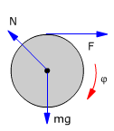
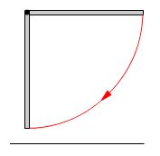
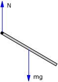
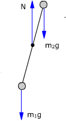
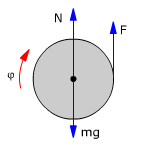

General
 |
Un disco homogéneo, m = 5 kg, R = 1m, puede girar alrededor de un eje horizon-tal que pasa por su c.d.m. Tangencialmente al disco se aplica una fuerza de 4 N, calcula la velocidad angular del disco al cabo de 10 vueltas |
Solución
Cambios de energía en el disco:
$$\begin{aligned}&\Delta E_C=\frac{1}{2}\,I\,\omega^2-0=\frac{1}{2}\,I\,\omega^2\\[6pt] &\Delta E_P=0\end{aligned}$$
No hay cambio de energía potencial porque el c.d.m del disco no cambia de altura ya que está fijo en el eje de rotación
Cálculo del trabajo:
|
 |
Trabajo neto: T = R·F·φ
Principio de conservación:
$$\begin{aligned}&\mathcal{T}=\Delta E_C+\Delta E_P\\[6pt] &R\,F\,\varphi=\frac{1}{2}\,I\,\omega^2\;\rightarrow\;\omega=\sqrt{\frac{2\,R\,F\,\varphi}{I}}\end{aligned}$$
$$\begin{aligned}&\omega=\sqrt{\frac{2\,R\,F\,\varphi}{\htmlData{pc-ac=ac0}{\boxed{m\,R^2/2}}}}=\sqrt{\frac{4\,F\,\varphi}{m\,R}}\\[6pt] &\omega=\sqrt{\frac{4\cdot4\ \mathrm{N}\;10\cdot2\pi\ \mathrm{rad}}{5\ \mathrm{kg}\;1\ \mathrm{m}}}=\htmlData{pc-ac=ac2}{\boxed{14{,}1\ \mathrm{\frac{rad}{s}}}}\end{aligned}$$
2Una varilla de 1 m de longitud y 1 kg de masa puede girar en un plano vertical alrededor de un eje que pasa por su extremo. Se deja en libertad la varilla a partir de la posición horizontal, calcula su velocidad angular cuando pase por la vertical
Solución
Cambios de energía:
|
 |
$$\begin{aligned}&\Delta E_C=\frac{1}{2}\,I\,\omega^2-0=\frac{1}{2}\,I\,\omega^2\\[6pt] &\Delta E_P=m\,g\,(h_{fin}-h_{in})=m\,g\,\htmlData{pc-ac=ac7}{\boxed{\left(-\frac{L}{2}\right)}}\end{aligned}$$
Cálculo del trabajo
 |
El momento de la normal es 0 porque está aplicada en el eje El peso si que tiene momento y por tanto hace trabajo. Pero el trabajo del peso no se cuenta porque está incluido en la variación de energía potencial. Resulta entonces: T = 0 |
Aplicando el principio de conservación:
$$\begin{aligned}&\mathcal{T}=\Delta E_C+\Delta E_P\\[6pt] &0=\frac{1}{2}\,I\,\omega^2-m\,g\,\frac{L}{2}\;\rightarrow\;\omega=\sqrt{\frac{m\,g\,L}{I}}\end{aligned}$$
$$\begin{aligned}&\omega=\sqrt{\frac{m\,g\,L}{\htmlData{pc-ac=ac8}{\boxed{m\,L^2/3}}}}=\sqrt{\frac{3\,g}{L}}\\[6pt] &\omega=\sqrt{\frac{3\cdot9{,}8\ \mathrm{m/s^2}}{1\ \mathrm{m}}}=5{,}42\ \mathrm{\frac{rad}{s}}\end{aligned}$$
 |
El sistema, inicialmente
en reposo, se deja en libertad, calcula la velocidad angular de
la varilla cuando pase por la vertical |
Solución
Las dos masas están a igual distancia del eje, luego la mayor decidirá la rotación: la varilla girará en sentido contrario al de las agujas del reloj
Cambios de energía:
 |
$$\begin{aligned}&\Delta E_C=\frac{1}{2}\,I\,\omega^2-0=\frac{1}{2}\,I\,\omega^2\\[6pt] &\Delta E_P=\Delta E_{P1}+\Delta E_{P2}=m_1\,g\,(h_{1\,fin}-h_{1\,in})+m_2\,g\,(h_{2\,fin}-h_{2\,in})\\[6pt] &\Delta E_P=m_1\,g\,\frac{L}{2}\,\htmlData{pc-ac=ac9}{\boxed{(\operatorname{sen}\varphi-1)}}+m_2\,g\,\frac{L}{2}\,\htmlData{pc-ac=ac10}{\boxed{(1-\operatorname{sen}\varphi)}}=(m_1-m_2)\,g\,\frac{L}{2}\,(\operatorname{sen}\varphi-1)\end{aligned}$$
Cálculo del trabajo
 |
El momento de la normal es 0 porque está aplicada en el eje Los pesos si que tienen momento y por tanto hace trabajon. Pero el trabajo del peso no se cuenta porque está incluido en la variación de energía potencial. Resulta entonces: T = 0 |
Aplicando el principio de conservación:
$$\begin{aligned}&\mathcal{T}=\Delta E_C+\Delta E_P\\[6pt] &0=\frac{1}{2}\,I\,\omega^2+(m_1-m_2)\,g\,\frac{L}{2}\,(\operatorname{sen}\varphi-1)\\[6pt] &\omega=\sqrt{\frac{(m_1-m_2)\,g\,L\,(1-\operatorname{sen}\varphi)}{I}}=\sqrt{\frac{(m_1-m_2)\,g\,L\,(1-\operatorname{sen}\varphi)}{\htmlData{pc-ac=ac8}{\boxed{m_1\,(L/2)^2+m_2\,(L/2)^2}}}}\\[6pt] &\omega=\sqrt{\frac{(m_1-m_2)\,g\,L\,(1-\operatorname{sen}\varphi)}{(m_1+m_2)\,L^2/4}}=\sqrt{\frac{4\,(m_1-m_2)\,g\,(1-\operatorname{sen}\varphi)}{(m_1+m_2)\,L}}\end{aligned}$$
 |
Un cilindro homogéneo, m = 1 kg, R = 5 cm, gira alrededor de su eje a 600 r.p.m. Se aplica tangencialmente en su periferia una fuerza de frenado de 0.1 kp. Determina las vueltas que dará hasta pararse |
Solución
Cambios de energía en el disco:
$$\begin{aligned}&\Delta E_C=0-\frac{1}{2}\,I\,\omega_0^2=-\frac{1}{2}\,I\,\omega_0^2\\[6pt] &\Delta E_P=0\end{aligned}$$
No hay cambio de energía potencial porque el c.d.m del disco no cambia de altura ya que está fijo en el eje de rotación
Cálculo del trabajo:
|
 |
Trabajo neto: T = -R·F·φ
Principio de conservación:
$$\begin{aligned}&\mathcal{T}=\Delta E_C+\Delta E_P\\[6pt] &-R\,F\,\varphi=-\frac{1}{2}\,I\,\omega_0^2\;\rightarrow\;\varphi=\frac{I\,\omega_0^2}{2\,R\,F}\end{aligned}$$
$$\begin{aligned}&\varphi=\frac{\htmlData{pc-ac=ac8}{\boxed{m\,R^2/2}}\;\omega_0^2}{2\,R\,F}=\frac{m\,R\,\omega_0^2}{4\,F}\\[6pt] &\varphi=\frac{1\ \mathrm{kg}\;5\cdot10^{-2}\ \mathrm{m}\;\left(\htmlData{pc-ac=ac11}{\boxed{20\pi\ \mathrm{rad/s}}}\right)^2}{4\cdot0{,}1\cdot9{,}8\ \mathrm{N}}=\htmlData{pc-ac=ac2}{\boxed{5{,}1\,\pi^2\ \mathrm{rad}}}\\[6pt] &\varphi=5{,}1\,\pi^2\;\frac{1}{2\pi}\ \mathrm{v}=8{,}01\ \mathrm{v}\end{aligned}$$